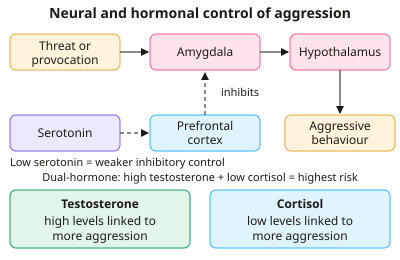

A-level Psychology Year 13 · Topic 13
Aggression
This topic asks why people are aggressive, using biological, social and institutional explanations.
We will cover the brain, hormones and genes, ethological and evolutionary explanations, frustration, social learning and deindividuation.
Then we look at aggression in prisons and the military, and whether violent media and video games make people more aggressive.
- 8 subtopics
- 267 questions
- Free: 13.1 notes and 10 questions
In this topic
- 13.1Neural and hormonal mechanisms in aggression: limbic system, serotonin, testosterone, cortisolFree below · 35 questions
- 13.2Genetic factors in aggression: twin and adoption studies, MAOA geneOpen in Full Marks · 24 questions
- 13.3Ethological explanations: innate releasing mechanisms and fixed action patternsOpen in Full Marks · 21 questions
- 13.4Evolutionary explanations: sexual jealousy, bullying and group displayOpen in Full Marks · 28 questions
- 13.5Social psychological explanations: frustration-aggression hypothesis and social learning theoryOpen in Full Marks · 30 questions
- 13.6Deindividuation and the role of anonymity in aggressionOpen in Full Marks · 30 questions
- 13.7Institutional aggression: importation and deprivation models, and aggression in the militaryOpen in Full Marks · 70 questions
- 13.8Media influences: violent media, video games, desensitisation and cognitive primingOpen in Full Marks · 29 questions
13.1 · Free notes
Neural and hormonal mechanisms in aggression: limbic system, serotonin, testosterone, cortisol

Key points
- The limbic system (including the amygdala, hippocampus and hypothalamus) regulates emotion. The amygdala appraises threat and triggers fight responses, so it is central to reactive aggression.
- Gospic et al. (2011) used fMRI in the Ultimatum Game. Unfair offers produced rapid amygdala activation and aggressive rejections. The benzodiazepine oxazepam reduced amygdala activity and cut aggressive responses.
- Pardini et al. (2014) followed boys into adulthood. Smaller amygdala volume predicted higher levels of aggression, violence and psychopathic traits, which supports a neural basis.
- The prefrontal cortex exerts top-down inhibitory control over the amygdala. Reduced prefrontal activity or weaker prefrontal-amygdala connectivity is linked to impulsive aggression (e.g. Raine et al., 1997, murderers pleading NGRI).
- Serotonin is a neurotransmitter with a calming, inhibitory influence. Low levels reduce prefrontal control over the amygdala, so impulsive aggression becomes more likely.
- Evidence for serotonin: Duke et al. (2013) meta-analysis found that raising serotonin (e.g. with drugs) tends to reduce aggression, although effect sizes are small. Low serotonin metabolites are also found in violent offenders.
- Testosterone is an androgen linked to dominance and aggression. Dabbs et al. (1987) found higher saliva testosterone in violent prisoners. Book et al. (2001) meta-analysis found a weak positive correlation (r = +0.14, so r² is about 2% of variance).
- Testosterone may increase amygdala reactivity and weaken prefrontal control. The direction of cause is unclear, because aggression and winning can themselves raise testosterone (Mazur's winner effect).
- Cortisol is a stress hormone released via the HPA axis. Low basal cortisol is linked to aggression (Popma et al., 2007), possibly through under-arousal, fearlessness and reduced sensitivity to punishment.
- The dual-hormone hypothesis (Mehta and Josephs, 2010) says cortisol normally inhibits testosterone's effects. High testosterone plus low cortisol gives the highest risk of aggression.
- Evaluation: most findings are correlational, so cause and effect cannot be shown. Much work uses animals (generalisation problem), and the approach is reductionist because it ignores learning, culture and cognition. Real-world aggression also involves interaction between biology and environment.
In more detail
- Worked limbic chain: a perceived threat → the amygdala reacts quickly → if prefrontal control is weak, the reaction is not held back → reactive aggression.
- Serotonin depletion: Mann et al. (1990) gave healthy volunteers dexfenfluramine, which lowers serotonin, and found hostility and aggression scores rose in men.
- Animal evidence: castrating male mice reduces aggression, and injecting testosterone restores it (Giammanco et al., 2005, review).
- Exam tip: describe the mechanism (what the structure or chemical normally does), link it to aggression, then evaluate with a study and a debate point such as reductionism.
Practice
Neural and hormonal mechanisms in aggression: limbic system, serotonin, testosterone, cortisol: 10 questions
Pick an answer to check it, or open the answer for the explanation.
1. Which part of the limbic system is most closely linked to detecting threat and triggering aggressive responses?
- Hippocampus
- Amygdala
- Thalamus
- Cerebellum
Show answer
B: Amygdala. The amygdala appraises threat and activates fight responses. The hippocampus is mainly involved in memory, and the cerebellum in movement coordination.
2. In Gospic et al. (2011), which drug reduced aggressive responses to unfair offers in the Ultimatum Game?
- Oxazepam, a benzodiazepine reducing amygdala activity
- Fluoxetine, which raised serotonin
- Propranolol, a beta-blocker
- Testosterone, which lowered cortisol
Show answer
A: Oxazepam, a benzodiazepine reducing amygdala activity. Oxazepam dampened amygdala activation and cut aggressive rejections of unfair offers, supporting the amygdala's role in reactive aggression.
3. A patient with prefrontal cortex damage has frequent angry outbursts. Which explanation best fits the neural model?
- Reduced top-down inhibition of the amygdala
- Excess serotonin makes the amygdala overactive
- The hippocampus produces too much cortisol
- The hypothalamus lacks testosterone receptors
Show answer
A: Reduced top-down inhibition of the amygdala. The prefrontal cortex normally inhibits amygdala-driven responses. Damage reduces this control, so impulsive aggression is more likely.
4. Which statement about serotonin and aggression is correct?
- Serotonin is a steroid hormone from the adrenal cortex
- High serotonin directly causes aggression
- Low serotonin is linked to poorer impulse control and more aggression
- Serotonin increases amygdala firing
Show answer
C: Low serotonin is linked to poorer impulse control and more aggression. Serotonin has an inhibitory, calming influence via prefrontal control of the amygdala, so low levels are associated with impulsive aggression. It is a neurotransmitter.
5. Book et al. (2001) reported r = +0.14 between testosterone and aggression. Approximately what percentage of variance in aggression does this explain?
- 0.14%
- 28%
- 2%
- 14%
Show answer
C: 2%. Variance explained is r squared: 0.14 x 0.14 = 0.0196, so about 2%. This is a very weak relationship.
6. Violent prisoners have higher saliva testosterone than non-violent prisoners. Why can't we conclude testosterone causes aggression?
- Testosterone is unrelated to behaviour
- The data are correlational; aggression may raise testosterone
- All prisoners are male
- Saliva cannot measure hormones
Show answer
B: The data are correlational; aggression may raise testosterone. Correlation does not show direction. Aggressive acts or winning can raise testosterone, and a third variable may be involved.
7. An adolescent has consistently low basal cortisol. Which prediction is consistent with research such as Popma et al. (2007)?
- Aggression only if serotonin is high
- No relationship with aggression
- Higher risk of aggression, possibly through under-arousal and fearlessness
- Lower risk of aggression because of reduced stress
Show answer
C: Higher risk of aggression, possibly through under-arousal and fearlessness. Low basal cortisol is associated with aggression, possibly because of low arousal and reduced fear of punishment.
8. According to the dual-hormone hypothesis, which combination gives the highest risk of aggression?
- Low testosterone, high cortisol
- Low testosterone, low cortisol
- High testosterone, low cortisol
- High testosterone, high cortisol
Show answer
C: High testosterone, low cortisol. Cortisol normally inhibits testosterone's effects. When cortisol is low, high testosterone is more strongly linked to dominance and aggression.
9. Mean amygdala volume was 3.1 cm³ in a high-aggression group and 3.6 cm³ in a low-aggression group. Which conclusion is best supported?
- There is no difference between the groups
- A larger amygdala causes aggression
- Aggression shrinks the amygdala
- Smaller amygdala volume is associated with higher aggression
Show answer
D: Smaller amygdala volume is associated with higher aggression. The high-aggression group's volume is about 14% smaller, consistent with Pardini et al. (2014). The data show association, not causation.
10. Which is a reductionist criticism of neural and hormonal explanations of aggression?
- They rely only on case studies
- They claim aggression is entirely learned
- They ignore social and cognitive factors such as learning and culture
- They cannot be tested scientifically
Show answer
C: They ignore social and cognitive factors such as learning and culture. Reductionism means explaining complex behaviour only at a biological level, ignoring social learning, cognition and culture.
Keep going in Full Marks
Full Marks has 35 questions on Neural and hormonal mechanisms in aggression: limbic system, serotonin, testosterone, cortisol (25 more than here), set out in practice levels. You also get notes and 3D models for all 8 subtopics of Aggression, plus games, timed exams and past papers.
On your exam board
Not in the OCR, Edexcel and Cambridge specifications.